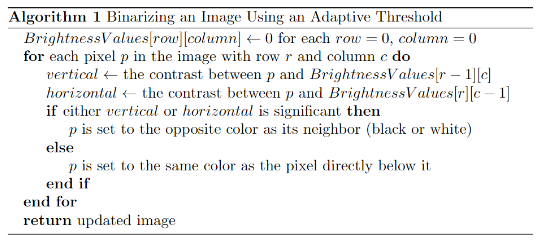
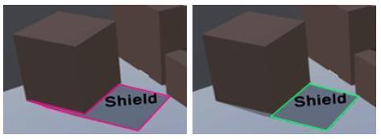

Shadow Shape Detection Game - Gloom
Last worked on in April 2022
This project was completed as my undergraduate senior project. The goal was to create a game that allowed for real time shape recognition of game shadows, such that the shadows could be categorized as various "tools" the player could use. For example, if the player could find or create a thin rectangular shadow, they could "steal" the shadow in order to create a sword to attack with. Though I worked on other parts of the game as well, my primary task was ownership over the system that detected and categorized these shadows.
This problem had several steps. First, shadows had to be detected as such to begin with. I used the standard method of capturing a camera's view into a render plane, but to binarize the data into strictly "shadow" and "not shadow," I had to modify existing standards for image binarization. Typically the desired algorithm here would be adaptive thresholding, which sets threshold values for many smaller regions of the image and can take multiple passes of all the pixels, but that created too much lag when used in combination with the rest of the system. Instead, I used local contrast to binarize images in a single pass of their pixels. The algorithm ended up looking like this:

After binarization, the simplified contours of the shape had to be identified. I tried at first to do this using purely geometric calculations - using the angles between each point to denote "signifigance," for example - but in the end nothing got as good of results for as of a little performance hit as image recognition did. As such, I ended up creating a custom DLL plugin to interface with OpenCV through Unity. This plugin was relatively quite simple; only a single function available, which took in the image data from Unity and used OpenCV's contour detection functions to spit back out a set of points. I did need to compress the image by several magnitudes before passing it along for performance reasons, though; I used Unity's built in bilinear interpolation function to determine the pixel values for the compressed images.
Once the contour points were identified, I used simple averaging to discover the center of the set and then ordered the points by descending angular values from the center point so the set would be ordered. In theory, this would then be where shape categorization happens, using the number of points and the relative angles between them to identify triangles, rectangles, and so on.
In practice, there was another step necessary - discovering and removing "outlier" points. Although the "real" shadow may not really be a normal polygon, the player may very well interpret it as one, and for the game to be any good at all the player's perception of shapes had to match what the detection and categorization system deemed them to be. An example of this sort of discrepency is below:

Due to the game level design causing outliers to almost never appear in any other formation than the one above, I was able to assume that these outliers only needed to be considered for shapes of exactly 5 points. With that assumption, I was able to take any set of 5 points and calculate the area of the triangles formed by each point along with its two adjacent points - in a true rectangle, these areas would all be proportionally significant to the full area of the shape, so outliers could be easily discarded from the rest.
From there, other parts of the shadow system were about largely managing resources - for example, only running the system when "significant change" is detected such as large movements, lights turning on or off, or objects getting moved.